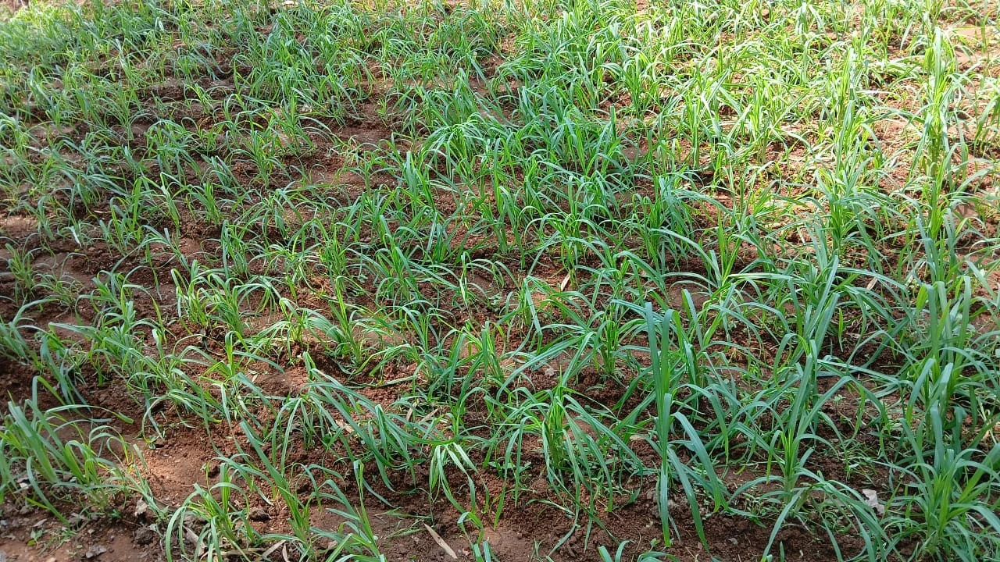
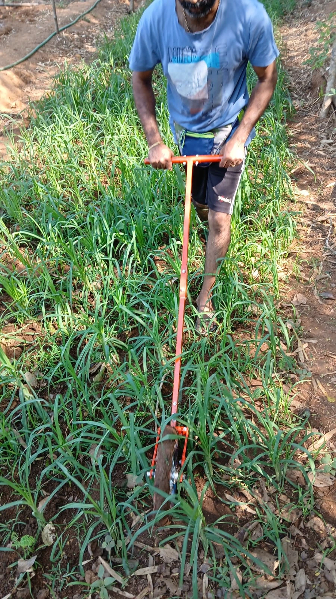
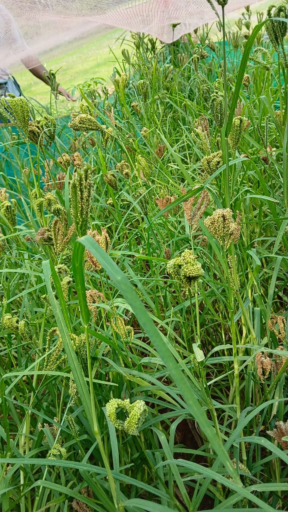
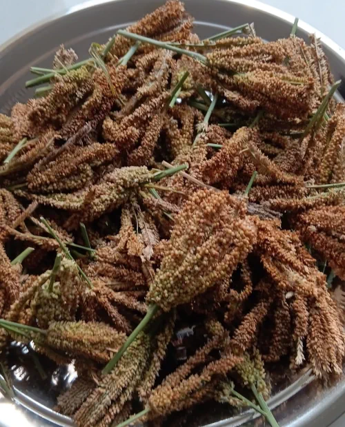
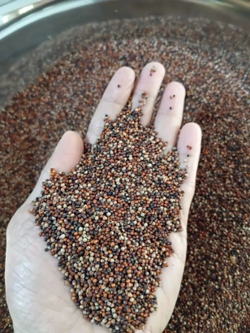

Finger Millet
Finger Millet (Ragi), widely cherished in India, is a powerhouse
of iron, calcium, and dietary fiber — making
it one of the most wholesome grains for all age groups.
At Sun Green Farms, we grow finger millet using the
System of Root Intensification (SRI) — an
innovative method originally developed for rice and thoughtfully
adapted to millet cultivation. This approach enables us to:
- Use fewer seeds while cultivating more vigorous, high-yielding plants
- Encourage deeper root systems and stronger tillering
- Improve soil aeration and moisture retention
- Foster beneficial microbial activity and enrich soil organic matter
Combined with our pure organic practices —
completely free from synthetic fertilizers, pesticides, or
chemicals—this method ensures our Ragi is
nutrient-rich, environmentally responsible, and safe for
everyday consumption
.
Area of Cultivation
We cultivate finger millet (Ragi) in a
limited area to ensure that harvesting is
entirely managed by hand, without the use of
mechanized tools. Large-scale mechanical harvesting often leads
to contamination, as
mud and dust from the field get mixed with the
Ragi seeds. By keeping our cultivation
small and manageable, we ensure
cleaner, purer grain and maintain
strict quality control at every stage.
Harvesting
Ragi is harvested manually with great care,
once the plant’s “fingers” begin to turn
brownish, indicating maturity. Unlike paddy,
Ragi doesn’t mature uniformly—the fingers on each plant ripen at
different times. This means harvesting must be done in
multiple stages, as and when each set of
fingers reaches the right level of browning.
If harvesting is delayed for uniformity, there’s a risk of
seed drop, as overripe fingers begin shedding
seeds onto the soil. To avoid this, we harvest promptly in
small, careful batches, preserving every grain.

Ragi Field

Weeding

Matured Ragi

Drying

Ready to pack
Processing and Packaging
To gently and efficiently separate the seeds from each Ragi
finger, we follow a
traditional, time-tested method. The harvested
fingers are packed tightly in clean gunny bags,
tied securely, and kept in a
dark room for about a week. This softens the
cloves and helps release the seeds.
The contents are then emptied into a
water trough, where
gentle hand rubbing helps the seeds separate
and settle at the bottom, while the clove waste floats and is
removed. The seeds are
washed thoroughly multiple times to remove any
remaining mud or impurities.
Next, the clean seeds are sun-dried on a neat cloth inside a
Solar Drier — a fully enclosed structure that
allows sunlight to dry the seeds while protecting them from dust
and airborne contaminants.
Once fully dried, the Ragi seeds undergo a
fanning process to remove any residual debris.
Finally, the grains are carefully packed,
preserving their
freshness, purity, and nutritional value.
 Chat with us
Chat with us